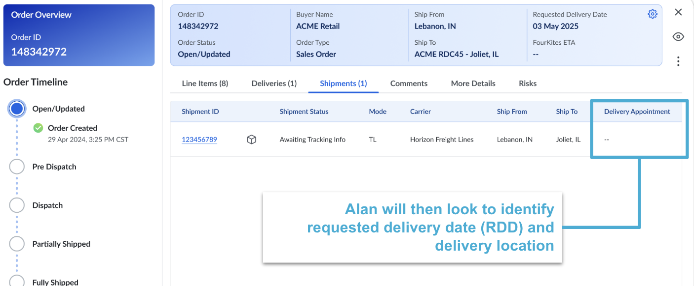
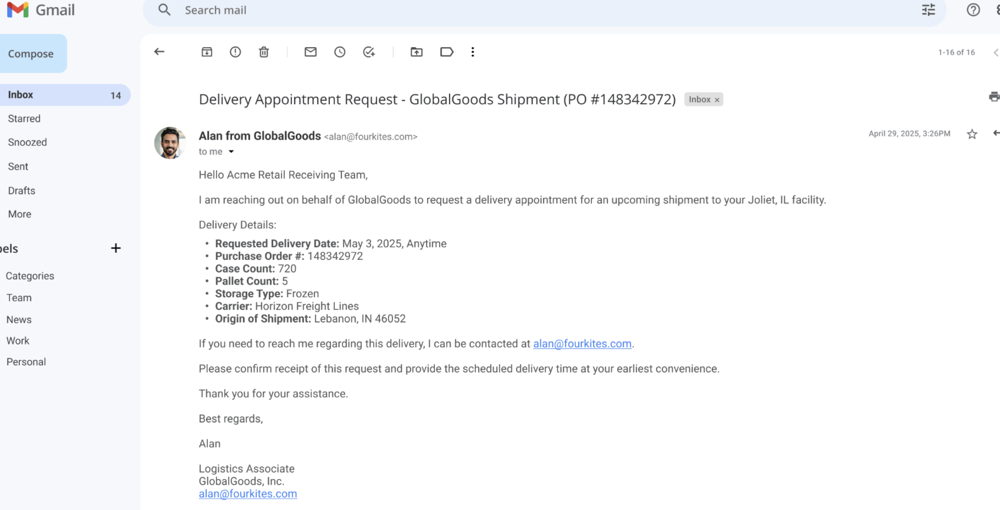
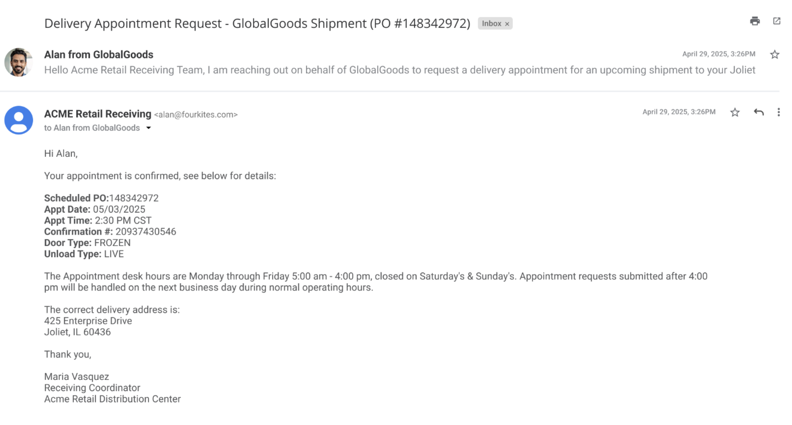
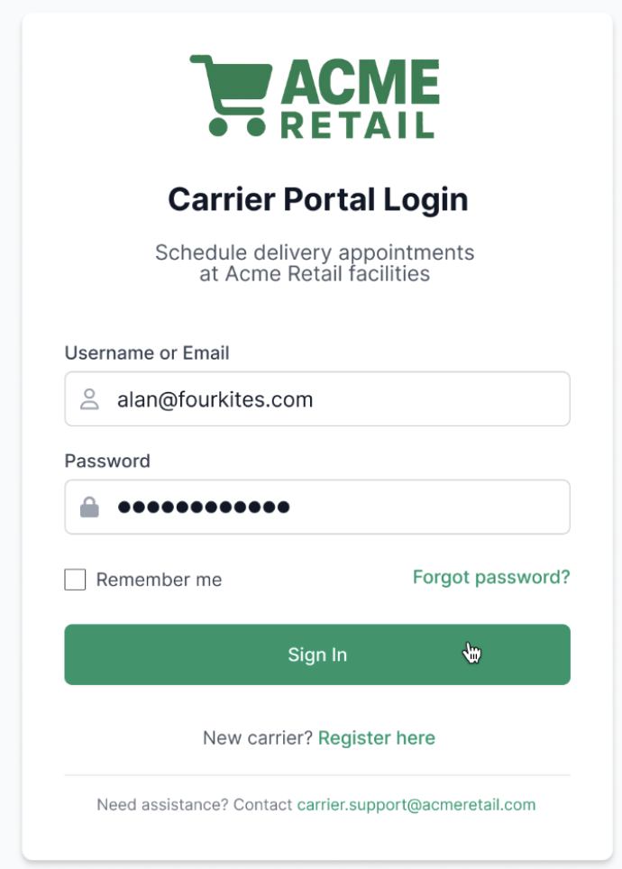
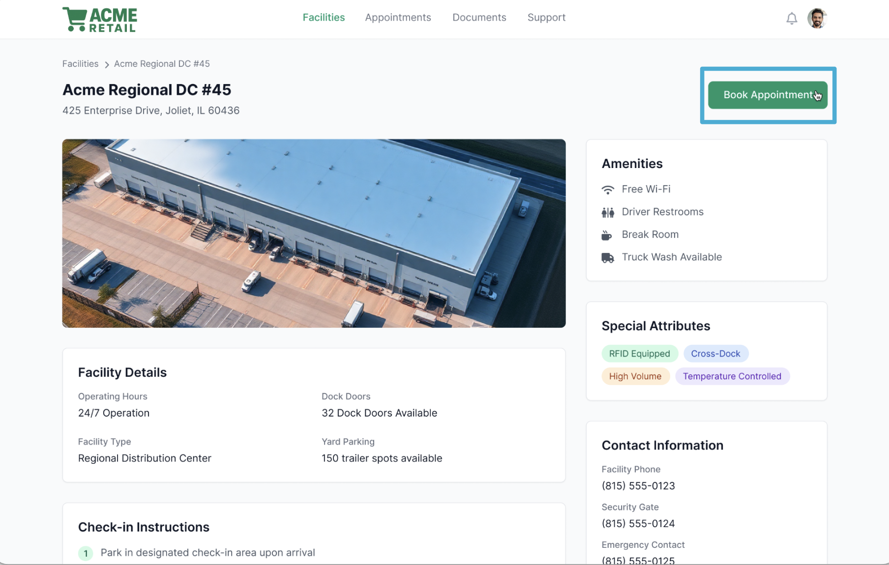
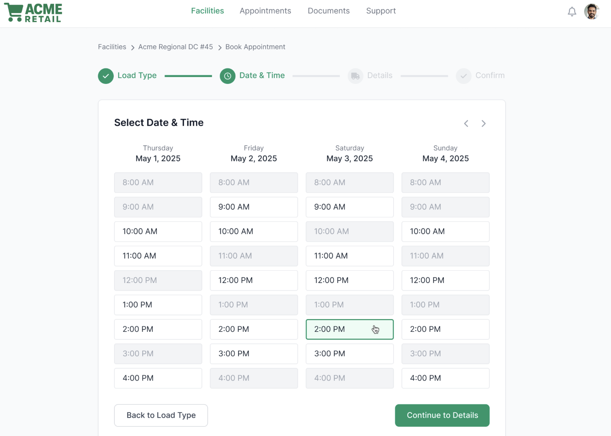
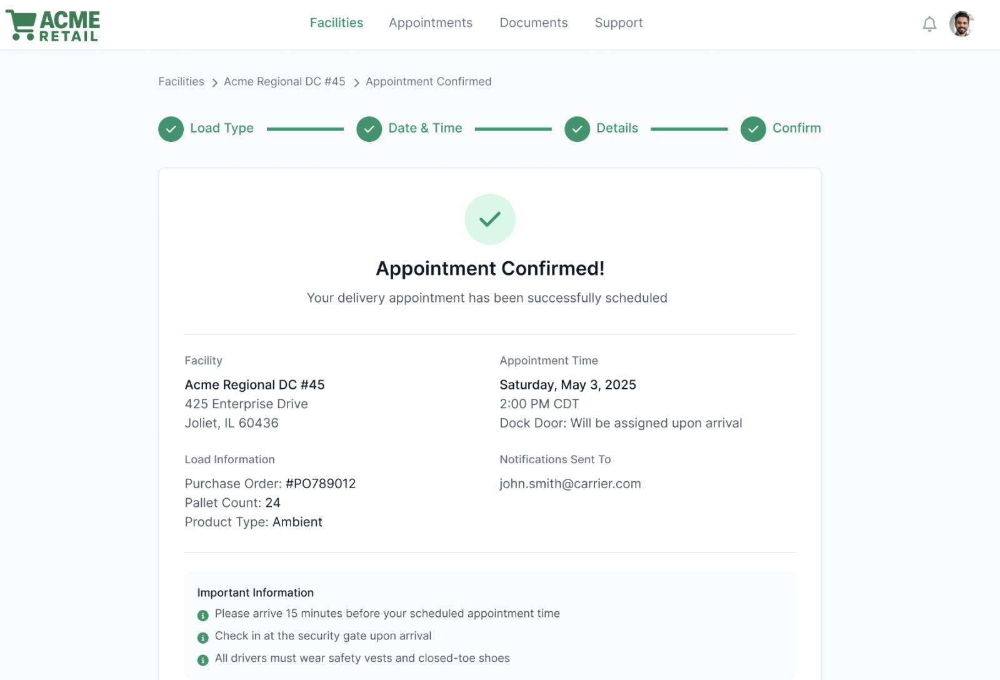
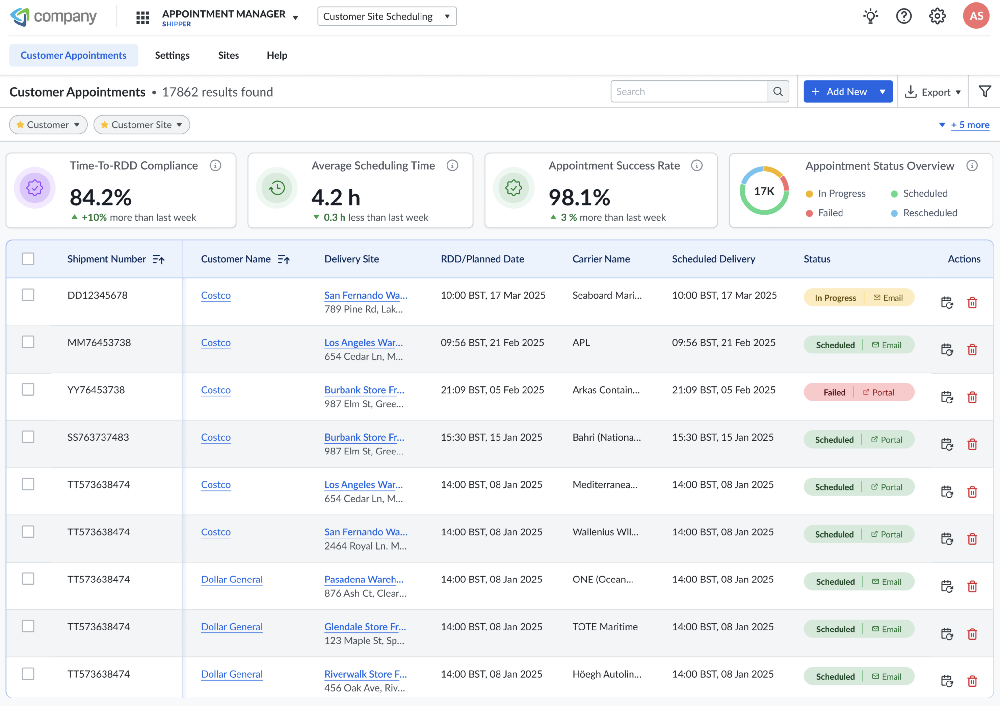
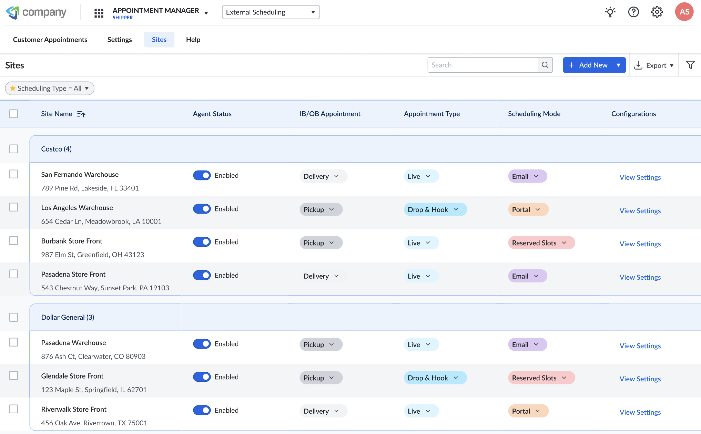

AI Agent Alan: Automating Logistics Scheduling
Transforming manual appointment coordination into intelligent, 24/7 autonomous operations: FourKites' first autonomous digital worker.
Director of UX, FourKites Intelligent Control Tower · 8-week pilot · 7 minute read
My Role: Director of UX, FourKites Intelligent Control Tower
Timeline: 8-week pilot program (2025)
Team: Cross-functional collaboration with Product, Engineering, Data Science, and Customer Success.
Executive summary
Led the UX strategy for AI Agent Alan, FourKites' first autonomous digital worker, solving a multi-billion dollar industry inefficiency in logistics appointment scheduling. Piloted with US Cold Storage (38 facilities nationwide), the solution achieved an 87% automation success rate while processing 600+ shipments across four major retailers, delivering immediate productivity gains and establishing a scalable framework for AI-driven operational transformation. That pilot design is now shipped: Alan runs in production as FourKites' Facility Operations Agent, operating inside a platform that moves 3.2M shipments a day across 400+ enterprise customers in 234 countries, the scale the trust and transparency patterns from this project were built to hold up under.
Alan overview
Alan is a digital worker developed by FourKites to automate the appointment scheduling process across logistics networks. He eliminates the manual inefficiencies of coordinating thousands of shipments, bridging the gap between automation, intelligence, and human-like adaptability. In FourKites' current product positioning, Alan is described plainly as a Facility Operations Agent: ETA-driven dock appointment automation that creates, reschedules, and manages appointments based on live shipment status without manual intervention.
Context & problem
Industry Challenge: Manual appointment scheduling consumes thousands of labor hours across logistics organizations. Each appointment requires repetitive, error-prone coordination over email, portals, and phone calls.
US Cold Storage (USCS), with 38 facilities nationwide, identified scheduling as its largest bottleneck, an area ripe for intelligent automation.
Design Challenge: How might we create an AI agent that behaves like an experienced logistics coordinator, context-aware, reliable, and human-trustworthy across multi-channel workflows?
Research & insight synthesis
Through interviews with schedulers, carrier reps, and logistics managers, the UX team uncovered critical pain points:
| Insight | UX Implication |
|---|---|
| 70% of schedulers' time spent on repetitive coordination | Automate high-frequency, low-value tasks |
| Lack of transparency across portals | Design unified visibility through centralized dashboards |
| Users distrust automation that "acts blindly" | Build transparent audit trails and natural confirmations |
| Missed appointments = financial penalties | Enable proactive exception handling with smart triggers |
Design goals
- Autonomy: Fully manage scheduling from request to confirmation
- Transparency: Provide visible logs and traceability for every interaction
- Adaptability: Handle diverse portal structures, emails, and rescheduling scenarios
- Trust: Build confidence through clear feedback loops and explainable actions
Solution: AI Agent Alan
Alan is a multi-channel AI scheduler that automates appointment booking, modification, and confirmation across:
- Email-based workflows
- Customer portals
- Phone-based scheduling systems
He integrates seamlessly with Transportation Management Systems (TMS) and the FourKites Intelligent Control Tower™, ensuring data consistency and real-time updates. The channel mix has kept evolving since the pilot: phone-based fallback handled the long tail of facilities without digital booking during the USCS rollout, while the production version formalizes the same multi-channel principle into email, portal/UI, system-to-system API, and EDI, so Alan can meet a facility however it already does business.
How Alan works
Underneath the interface, Alan runs on a continuous loop against FourKites' Shipment Twin, the live digital-twin representation of every shipment's ETA. That loop is what makes the audit-trail and human-override UX in the next section non-negotiable rather than nice-to-have: the system is making scheduling decisions on its own, so the interface is the only place a human can see why, and step in.
Shipment Twin supplies live ETA updates for all inbound shipments.
Alan compares current ETAs against scheduled appointment windows.
When an ETA shift makes an appointment invalid, Alan identifies the optimal new window based on dock availability, facility capacity, and priority rules.
Alan reschedules the appointment through the appropriate channel: carrier portal API, email, or EDI.
The carrier receives confirmation, and the facility schedule updates automatically.
Unresolvable conflicts escalate to a facility coordinator with full context attached.
Appointment adherence, dock utilization, and dwell-time data feed back in, for continuous optimization.
Process transformation
How AI Agent Alan eliminated manual scheduling inefficiency.
New PO in TMS
Manual review & assignment
Request, wait for response
Navigate different systems
Confirm details if unclear
Copy data back to system
Challenges
- 3–24+ hours total cycle time per appointment
- Sequential processing, only one appointment at a time
- High error rate from manual data entry
- Staff burnout from repetitive tasks
- No night/weekend coverage, delays accumulate
Alan monitors in real time
Email or portal booking
Receives & validates response
Automatic TMS sync via API
Impact
- Minutes vs. hours, average booking time reduced 90%
- 150+ parallel appointments processed simultaneously
- 87% automation success with 96% accuracy
- 36–40 hours saved in the 8-week pilot alone
- 24/7 operation, no delays, no overtime costs
Core Experience Features
| Feature | User Value |
|---|---|
| Multi-Channel Scheduling Automation | Single unified workflow replaces fragmented tools |
| Proactive Exception Management | Automatic rescheduling when ETA changes |
| Seamless TMS Integration | Real-time updates across systems |
| Intelligent Prioritization | Optimizes delivery windows using business rules |
| Audit Trail UI | Every action visible and reversible, building user trust |
Pilot outcome: US Cold Storage
Metrics from 8-week pilot:
- 87% automation success rate
- 96% accuracy in securing delivery dates
- 600+ shipments processed
- 36–40 hours saved weekly per facility
Schedulers described Alan as "invisible but dependable, the best coworker we never hired."
"Alan booked 87% of our appointments successfully and 96% of those on the customer's requested delivery date. Our team was amazed an appointment could be made with no human interaction."
Keith Mowery, EVP, United States Cold Storage
From pilot to platform
The USCS pilot became the proof point FourKites needed to ship Alan as a standing product capability. He's now one of six agents in FourKites' Digital Workforce, which collectively delivers 152 outcomes across five supply chain domains, and the design decisions from this project, the audit trail, the escalation path, the confirmation language, carried forward into that production release largely unchanged. At scale, the same automation model this pilot validated is now producing a 28% improvement in dock adherence and a 35% reduction in driver wait time across the customers running it.
See how Alan fits alongside Tracy, Sam, and Polly in the Digital Workforce case study.
Ethical & reflexive design
- Transparency by design: Every AI decision logged and explainable
- Human-in-the-loop controls: Override and audit capabilities maintained
- Privacy & Compliance: Adheres to enterprise-grade security and data governance
Key takeaways
- Intelligent UX in AI systems is not about replacing people, it's about elevating human focus from coordination to strategy.
- Contextual AI succeeds when it communicates visibly, not invisibly.
- Trust and usability are inseparable in enterprise automation.
Scalable future vision
Alan is now being extended to support:
- Cross-dock optimization
- Yard scheduling integration
- Scalable to 38 USCS facilities nationwide
- Voice-activated control for dispatchers
Next design iteration focuses on adaptive UX, Alan's ability to tailor responses by role, urgency, and facility behavior.
"Alan transformed scheduling from a chore into a conversation, and logistics from reactive coordination into proactive orchestration."
A few screens
1. FourKites detects a new purchase order, and Alan sees that an appointment is not set.

2. Alan requests a delivery appointment, and confirms with facility.


3. If Alan has to schedule an appointment using the customer appointment portal.
Alan accesses the portal

Alan initiates the scheduling process



Appointment Status Logs

Facility: Scheduling Configurations
